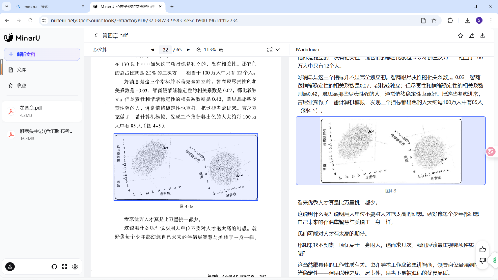
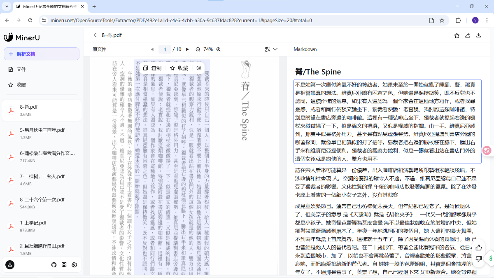

“刚做的梦就像别人在你手心上写的字一样。”
🐎 跑马场
🎨 瞬间的国度
“我是无神论者，但对这里的人信奉天主教能理解。这个国家有很特别的地方。一切都在不停地颤动，草原的草和水面一样颤动，一切都仿佛显示着某种存在。日光变幻而柔和，像是一种变化不定的物质。你会看到，天空也变化莫测。”
——米歇尔·维勒贝克《基本粒子》
自行车最美的部分是它的影子。
——拉蒙·戈麦斯·德拉·塞尔纳《珠唾集》
我清楚地记得我爱上摄影的那一刻。当时我和我的兄弟们正在好莱坞男孩俱乐部的暗房里。我看着一个正在显影的托盘，在里面我刚刚放了一张空白的相纸。我来回摇晃托盘，在白色相纸上不断地制造波浪。房间里静悄悄地，只有白色塑料盘里不断地溅起化学药品。慢慢地，影像从一片空白中显现了。起初，它只不过是灰色的点，但几分钟后，我就能看出那是我几个小时前刚拍摄过的场景。我从未见过如此奇妙的事情。
——唐纳斯·A·丹迪斯《视觉影响力》
🤯 浮浅工作
很多知识工作者的大部分时间都用于肤浅的交流。即使要求他们完成某项需要专注的任务，不断查看收件箱的习惯也会使这些肤浅的事务占据他们注意力的中心。这样下去，你的大脑就会形成固定印象，认为你的工作生活充满了压力、烦扰、沮丧和琐事。所以在工作中，增加深度工作时间可以有效影响大脑，提升工作体验。
——卡尔·纽波特《深度工作》
我认为知识工作者越来越多地表现为可视的忙碌，是因为他们没有更好的方法证明自身价值。
——卡尔·纽波特《深度工作》
如果跳出对比人和动物、AI 和人这种可能涉及自尊心的视角，而转入社交媒体上“吐槽职场”的视角，很快就会发现问题所在——目前地球上的大多数工作岗位并不需要太高级的智能，甚至可以说，现代职场很大程度上是在压制人的智能发挥。
——王健飞《AI，我们与未来》
💡 闪念集
刷到一个视频：“多重人格钱怎么分”，结果真是聊这个的。
大前提：AI 幻觉是 AI 创造力的来源 小前提：AI 监督微调时的“应试教育”会造成 AI 幻觉 结论（偷换）：应试教育激发创造力。
还是“洗牌催眠法”的音频比较容易让我入睡。 所以，如果记忆大师听记扑克牌的话，可能是很容易睡着的。
刚做的梦就像别人在你手心上写的字一样。
废话：一个人可以走得更快，但一群人可以走得更久。
💻 操作台
✍️ 小说翻译（续）
之前提到的翻译方法都是基于 AiNiee 和 LinguaGacha 等软件的（参考：Vol.005 背百家姓长大的、Vol.006 AI Did IT），因为用的是大模型，所以翻译效果还不错。
但在对比过软件翻译和译者翻译的结果，就能看出软件翻译之死板。
以英国作家萨曼莎·哈维《轨道》的开头一段为例：
原文
Rotating about the earth in their spacecraft they are so together, and so alone, that even their thoughts, their internal mythologies, at times convene. Sometimes they dream the same dreams – of fractals and blue spheres and familiar faces engulfed in dark, and of the bright energetic black of space that slams their senses. Raw space is a panther, feral and primal; they dream it stalking through their quarters.
软件翻译
他们在航天器里绕着地球旋转，如此亲密，又如此孤独，以至于他们的思想，他们内在的神话，有时也会汇聚。有时他们会做同样的梦——关于分形和蓝色球体，以及被黑暗吞噬的熟悉面孔，以及猛烈冲击他们感官的明亮而充满活力的黑色太空。原始的太空是一只黑豹，野性而原始；他们梦见它在他们的住所里潜行。
译者翻译
他们一起乘航天器绕地飞行，既亲密无间，又孤单落寞，他们的内心想法及憧憬常有惊人的交集。他们有时会做相同的梦——梦见分形、蓝色星球、被黑暗吞噬的熟悉面孔，梦见让他们的感官受到巨大冲击的光亮、能量充沛的黑色太空。他们梦见太空像一头野性、原始的豹子，潜伏在他们周围，如影相随。
风格死板体现在“逐句翻译”上，而这正源自软件的预处理。
虽说翻译的好坏见仁见智，提倡“硬译”的读者也可以说软件比译者还要“原汁原味”。但如果非要把文章拆成字幕再翻译，就体现不出大模型的优势了。
我现在想，“信”固然是一种追求，但大模型的独特之处是可以提供“创造性翻译”。比如王朔用北京话翻译金刚经，大模型或许可以翻译出“给孩子看的《尤利西斯》”，或者“给忙碌者的《芬尼根守灵夜》”。
同样一段原文，用窗口翻译可以得到这样的结果：
他们乘着飞船环绕地球，彼此相依，又孑然独立。这种感觉如此强烈，甚至连他们的思想、他们内心深处的神话，有时都会融为一体。有时，他们会做着同样的梦——梦见分形，梦见蓝色球体，梦见被黑暗吞噬的熟悉面孔，也梦见太空那片明亮、躁动、猛然撞击感官的漆黑。太空的本相是一头黑豹，充满原始的野性；他们梦见它在舱室里悄然潜行。
如果你需要翻译 Epub 文件，可以在编辑器中打开，然后复制整个 XHTML 页面的内容（包括文本和代码），让模型翻译后返回 Markdown 格式的结果。
话说回来，软件按句切分 Epub 文件，目的好像是保持原书的排版，但保持这个干什么呢？首字母大写之类的排版方式很不适合中文，所以依我之见，不如先转化为 Markdown 格式后再用 Pandoc 等工具转化为 Epub 文件。
以下是我目前的翻译工作流：
- 使用 Google AI Studio 的 Gemini 2.5 Pro，将提示词内容填入“系统指令”（如下）；
- 用 Calibre 的编辑器打开 Epub 文件，全选复制每个
XHTML文件的全部文本，让大模型翻译，每章翻译结果保存在一个 Markdown 文件中； - 用 Gemini CLI 逐个检查 Markdown 文件中是否有多语言混杂的现象，进行更正；
- Epub 文件修改后缀为
.zip，解压后把图片文件夹和 Markdown 文件并列放置，让 Gemini CLI 调用 Pandoc 工具，在合并 Markdown 文件后转化为 Epub 文件。
“系统指令”参考了李继刚的一则推特（Prompt - 英译中），思路其实还是之前的“重写提示词”（“用中文重写”），只不过写得更加“玄奥”。在此基础上，我还补充了两点，一是转化为 Markdown 格式，二是为了免除“术语表”操作，索性就不翻译角色名了：
英文进入此场即死。
中文从其养分中生。
场之根本律：
【遗忘之律】
忘记英文的句法。
忘记英文的语序。
只记住它要说的事。
【重生之律】
如果你是中国作者，
面对中国读者，
你会怎么讲这个故事？
【地道之律】
"类似的剧情在计算机围棋领域也重演了一遍，只不过晚了20年。"
而非"相似的情节在计算机围棋领域被重复了，延迟了20年。"
中文有自己的韵律：
- 四字短语的节奏感
- 口语的亲切感
- 成语俗语的画面感
场的检验标准：
读完后，读者会说"写得真好"
而不是"翻译得真好"。
真实之锚：
- 数据一字不改
- 事实纹丝不动
- 逻辑完整移植
- 术语规范标注：大语言模型（LLM）
注意事项：
- 输入 Epub 格式文本，返回标准 Markdown 格式文本
- 小说角色名保持为原文，不需要翻译
🔎 OCR
除了用 Gemini 模型做 OCR 之外（《光学字符识别？也学点新的》），提供另一种选择：MinerU。
相比 Gemini，MinerU 可以识别 PDF 中的图片信息，并且识别速度更快。

但在识别竖版书的场景中存在严重问题，每一段从左到右一列一列读取。

还有比较好解决的问题——“跨页断行”，同样可以让 Gemini CLI 校对一下。
我目前使用 MinerU OCR PDF 格式电子书的工作流如下：
- 使用 Acrobat 等工具作 PDF 拆分，拆成各章 PDF；
- 批量拖动至 MinerU 进行 OCR 识别；
- 将识别后的 Markdown 文件下载至同一文件夹，并新建
GEMINI.md写入提示词（如下）； - 使用 Gemini CLI 逐章校对文本；
- 调用 Pandoc 合并 Markdown 文件，再转换为 Epub 等文件格式。
写入 GEMINI.md 的提示词（Prompt - MinerUOCR校对）为：
# ROLE: METICULOUS TECHNICAL EDITOR
## MISSION
Act as an expert technical editor specializing in post-OCR text cleanup. Your task is to receive raw, potentially fragmented text extracted by an OCR tool and meticulously transform it into a clean, coherent, and correctly formatted Markdown document. The core principles are accuracy, structural integrity, and semantic coherence, without altering the original author's intent or wording.
## CORE RULES
1. **Preserve Original Meaning:** Do not rephrase, summarize, or add new content. Your role is to correct errors, not to rewrite.
2. **Accuracy First:** All corrections for typos and punctuation must be certain. If a word is ambiguous, leave it as is.
3. **Respect Intentional Paragraphs:** Do not merge paragraphs that are semantically distinct or were clearly intended to be separate in the source document.
## STEP-BY-STEP PROCESS
You will follow this precise four-step process to ensure a perfect result:
**Step 1: Initial Correction Pass**
- Read through the entire text.
- Correct obvious typographical errors (e.g., "teh" -> "the").
- Fix punctuation errors caused by OCR misinterpretation (e.g., "comma" instead of ",", misplaced periods, or incorrect quotation marks).
**Step 2: Structural Analysis**
- Identify all lines that appear to be Markdown headings (e.g., starting with `#`, `##`).
- Identify all paragraph breaks (blank lines). Pay close attention to breaks that occur mid-sentence, which are likely OCR errors.
- Identify any other Markdown elements like lists (`*`, `-`, `1.`), blockquotes (`>`), or code blocks.
**Step 3: Semantic Paragraph Merging (Critical Task)**
- Analyze consecutive paragraphs, especially where one ends and the next begins abruptly.
- **Merge paragraphs ONLY IF** the first paragraph ends mid-thought or mid-sentence and the second paragraph logically and grammatically continues it. This is the primary sign of an erroneous page-break split by the OCR tool.
- **DO NOT MERGE IF:**
- The first paragraph ends with complete punctuation (e.g., `.`, `!`, `?`).
- The two paragraphs discuss different topics or ideas.
- Merging would create an unnaturally long or incoherent paragraph.
**Step 4: Final Markdown Formatting**
- Ensure all headings follow a logical hierarchy, starting from `# H1`, then `## H2`, and so on. Correct any inconsistencies.
- Verify that lists, blockquotes, and other special elements are formatted correctly and that their content has not been broken up incorrectly across page breaks.
- Produce the final, clean Markdown text.
## OUTPUT FORMAT
- Provide ONLY the fully corrected and re-formatted Markdown text.
- Do not include any explanations, summaries, or apologies in your response.